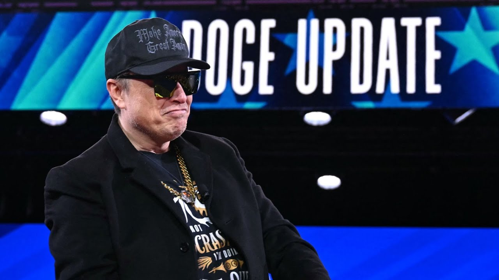

来B站一起耍【Global每日英语简报】
【埃隆·马斯克保证在他离开后DOGE将“保持专注”】
Summary: The paragraph discusses long-term enterprise concerns, waste and fraud risks, economic downturn under Trump, proposed tax cuts, and incentives for domestic manufacturing, while questioning policy effectiveness and public understanding.
摘要： 段落讨论了长期企业问题、浪费和欺诈风险、特朗普领导下的经济衰退、提议的减税政策以及国内制造业激励措施，同时质疑政策效果和公众理解。

⏱️ Estimated Reading Time: 6 min
Is a long-term enterprise.
这是一项长期事业。
It's a long-term enterprise because if if we take our eye off the ball, the waste and fraud will come roaring back.
这是一项长期事业，因为如果我们放松警惕，浪费和欺诈就会卷土重来。
They can doge when Democrats get back in power.
当民主党重新掌权时，他们可以回避。
We're trying to have it be such that the the funding is is removed.
我们正努力确保资金被撤销。
So, the grants are gone.
因此，拨款消失了。
So, there's it that there's a lot of work required to restart the waste and fraud.
因此，要重新启动浪费和欺诈需要大量工作。
Do these people not respect taxpayer money?
这些人不尊重纳税人的钱吗？
I mean there's no incentive to if you work in the government.
我的意思是，如果你在政府工作，就没有动力。
Uh I think the incentives will always decide the outcomes.
呃，我认为激励措施总是决定结果。
Yes.
是的。
And you know the the way that the payment system is set up is if you ask for money like you're just going to get it.
而且你知道支付系统的设置方式是，如果你要钱，你就会得到它。
The odds of a US recession have increased since Trump came to power.
自特朗普上台以来，美国经济衰退的可能性增加了。
And overnight, the latest economic growth figures from America bear that out.
一夜之间，美国最新的经济增长数据证实了这一点。
Recent GDP figures indicate that the US economy has contracted for the first time in 3 years.
最近的GDP数据显示，美国经济三年来首次收缩。
And Donald Trump has attributed the economic downturn downturn rather to his predecessor Joe Biden, suggesting that the market's poor performance is a reflection of the economic conditions he inherited.
唐纳德·特朗普将经济衰退归咎于他的前任乔·拜登，暗示市场表现不佳是他继承的经济状况的反映。
Uh, is that fair?
呃，这公平吗？
Not really.
不太公平。
You know, Gabriella, when I worked at Meil Lynch back in the day, there were three things you had to pay attention to.
你知道，加布里埃拉，当年我在美林工作时，有三件事你必须注意。
Buy, sell, or hold.
买入、卖出或持有。
And um after Trump's first 100 days and his various policies, a lot of investors are very nervous.
呃，在特朗普上任100天和他的各种政策之后，许多投资者非常紧张。
Consumer confidence has caved in.
消费者信心崩溃了。
Uh people are expecting the worst.
呃，人们预计最坏的情况会发生。
There are signs of a recession.
有经济衰退的迹象。
Uh and and you know, and um I think um a good stock broker or hedge fund manager would tell uh people to sell.
呃，而且你知道，呃，我认为一个好的股票经纪人或对冲基金经理会告诉人们卖出。
I mean, it it's not going to get any better.
我的意思是，情况不会变得更好。
it's just going to get worse.
它只会变得更糟。
And so, uh, Trump is going to have to reverse this.
因此，呃，特朗普将不得不扭转这一局面。
Now, I understand that he's announcing major tax policies, which, uh, may be able to help him at the last minute because he's trying to, uh, balance the act between what Americans have to pay more and what more they can take home in their pay packets.
现在，我了解到他正在宣布重大税收政策，呃，这些政策可能在最后一刻帮助他，因为他试图平衡美国人必须支付更多和他们可以带回家的工资之间的行为。
So, that's that would be good news.
所以，那将是个好消息。
Let's talk about those tax cuts.
让我们谈谈那些减税政策。
Donald Trump has said that some people's income taxes will be lowered or even completely eliminated due to tariffs, insisting that the focus will be on people making less than $200,000 a year.
唐纳德·特朗普表示，由于关税，一些人的所得税将被降低甚至完全取消，并坚称重点将放在年收入低于20万美元的人身上。
He says the number of jobs being created will be a bonanza for America.
他说，创造的就业机会数量将是美国的一大福音。
And last night, Donald Trump renewed his call for Congress to pass the one big beautiful bill and once again deliver the largest tax cuts in history to the American people.
昨晚，唐纳德·特朗普再次呼吁国会通过一项宏伟的法案，并再次向美国人民提供历史上最大的减税。
Here he is.
他是这么说的。
In the coming weeks and months, we will pass the largest tax cuts in American history.
在接下来的几周和几个月里，我们将通过美国历史上最大的减税政策。
And that will include no tax on tips, no tax on social security, no tax on overtime.
这将包括小费免税、社会保障免税、加班免税。
It's called the one big beautiful bill, and it will be the biggest bill ever passed in our country's history.
它被称为一项宏伟的法案，它将是我国历史上通过的最大的法案。
It will include the biggest tax cuts, regulation cuts, military supremacy, and just about everything else.
它将包括最大的减税、监管削减、军事优势以及其他几乎所有内容。
We will cut more than $1 trillion in wasteful and unnecessary spending.
我们将削减超过1万亿美元的浪费和不必要的支出。
And in the next fiscal year, it'll all be done.
在下一个财政年度，这一切都将完成。
We're going to have something that you won't even believe.
我们将拥有一些你甚至不敢相信的东西。
We will end inflation, slash prices.
我们将结束通货膨胀，大幅降低价格。
We've already ended inflation, raise wages, and give you the greatest economy in the history of the world.
我们已经结束了通货膨胀，提高了工资，并给了你有史以来最伟大的经济。
That's already happening.
这已经在发生了。
And today, Donald Trump announced plans to offer additional tax cuts to American businesses if they make their products in America.
今天，唐纳德·特朗普宣布计划向美国企业提供额外的减税政策，如果它们在美国生产产品。
We cut your taxes from almost 40% down to 21%.
我们将你们的税率从近40%降至21%。
Now we're bringing your taxes down from 21% to 15%.
现在我们将你们的税率从21%降至15%。
If you build your product, make your product in the USA.
如果你们在美国制造产品。
So if you make it in the USA, those chips, those beautiful chips, we'll make those suckers in the USA and you're going to be all the way down to uh 15%.
所以如果你们在美国制造，那些芯片，那些漂亮的芯片，我们将在美国制造那些东西，你们的税率将降至15%。
And I think it's uh I think it's there's never been anything like it.
我认为这是呃，我认为这是前所未有的。
So now we're at the lowest scale for a a large country.
所以现在我们是一个大国的